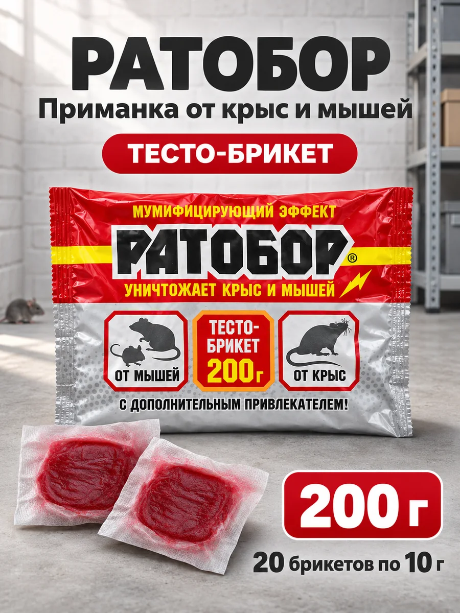
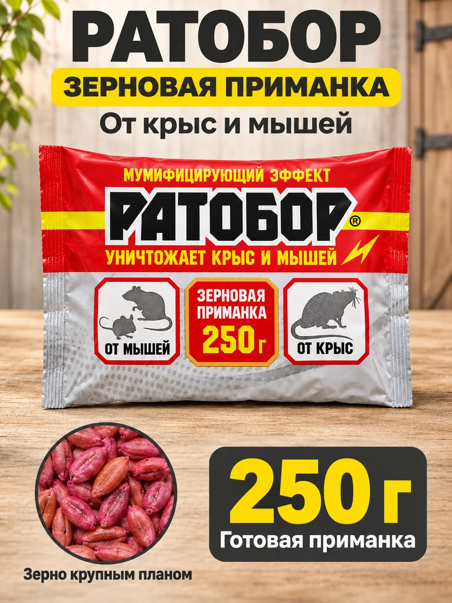
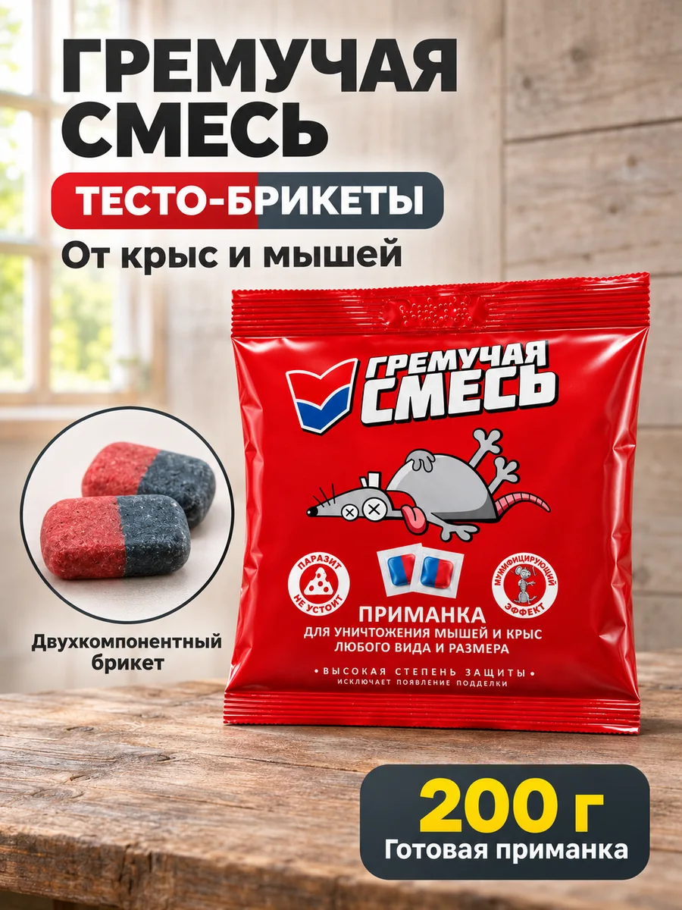
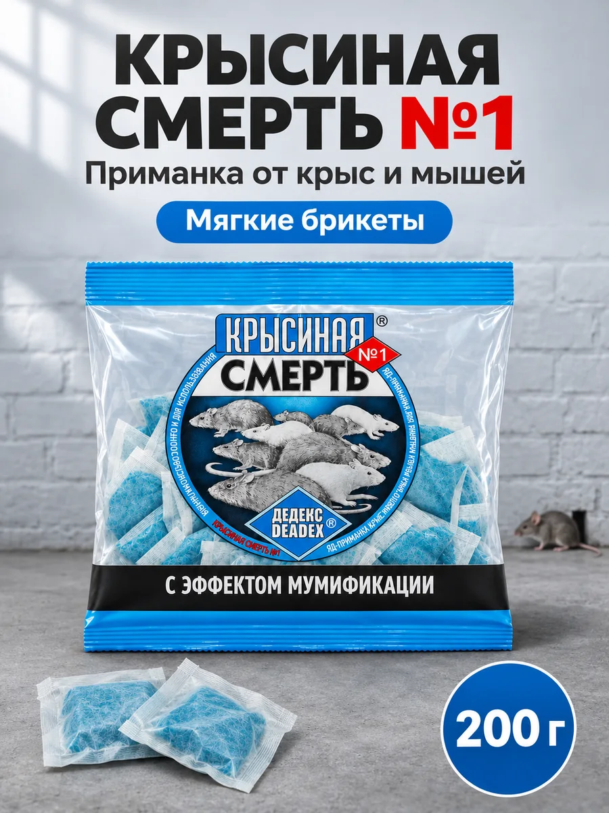

Приманки от грызунов: правила безопасного размещения
Справочный материал о том, как обращаться с приманками так, чтобы не пострадали дети, домашние животные и птица.
Это материал о безопасности
Здесь нет рекламы и советов, как быстрее избавиться от грызунов. Приманки опасны для человека, домашних и сельскохозяйственных животных и птицы. Всё, что касается норм раскладки и состава, берите только с этикетки вашей упаковки.
Коротко
- Приманку раскладывают только в специальные приманочные ящики, исключающие доступ детей, животных и птицы.
- Хранят отдельно от продуктов и кормов, в недоступном для детей месте.
- Отравление домашнего животного возможно и при поедании отравленного грызуна.
- При подозрении на отравление — сразу к врачу или ветеринару, с упаковкой в руках.
- Уборка и недоступное хранение корма работают лучше любой приманки.
Сначала — почему грызуны пришли
Рекомендации Роспотребнадзора начинаются не с приманок, а с условий: грызуны чаще заводятся в сырых и захламлённых помещениях, где есть доступная еда.
Поэтому первое, что стоит сделать, — убрать причину:
- хранить корм и продукты в закрытой таре, недоступной для грызунов;
- убрать захламление, где можно устроить гнездо;
- устранить сырость;
- закрыть щели и вводы коммуникаций.
Это скучнее, чем разложить приманку, но именно это решает задачу надолго.
Приманочные ящики — не формальность
Главное правило размещения: приманка находится в специальном приманочном ящике, который исключает доступ детей, домашних животных и птицы.
Смысл двойной. Во-первых, ящик физически не пускает к приманке тех, для кого она не предназначена. Во-вторых, он удерживает приманку на месте: грызун не растащит её по помещению.
Открытая раскладка «в уголке» этого не обеспечивает.
Где раскладывать нельзя
- В курятнике, в птичнике, в местах выгула птицы.
- Рядом с кормушками и поилками.
- В местах, доступных кошкам и собакам.
- Там, где играют дети.
- В помещениях хранения кормов и продуктов без надёжной изоляции.
Если на вашей упаковке есть раздел о применении — следуйте ему дословно. Своих норм раскладки и расстояний мы не придумываем.
Как обращаться
- Работайте в перчатках.
- Не ешьте, не пейте и не курите во время работы.
- Не пересыпайте приманку в другую тару: средство применяется только в заводской потребительской упаковке.
- Ведите учёт точек раскладки, чтобы потом собрать всё до одной.
- Погибших грызунов убирайте в перчатках и утилизируйте по указаниям на этикетке.
Если пострадал человек или животное
Антикоагулянтные родентициды — частая причина отравлений домашних животных, в том числе вторичных, когда животное съело отравленного грызуна. Признаки развиваются не сразу: сначала угнетённое состояние и потеря аппетита, позже — кровотечения.
Главное здесь — время. Шансы даёт раннее обращение.
Когда обращаться к ветеринару
При подозрении на отравление человека немедленно обратитесь к врачу, при подозрении на отравление животного — к ветеринарному специалисту.
Возьмите упаковку с собой. По действующему веществу помощь подбирается быстрее.
Не пытайтесь помочь домашними средствами и не ждите «понаблюдать до утра».
Подробнее про вторичное отравление — в материале о кошке и отравленной мыши.
Частые вопросы
Можно ли раскладывать приманку в курятнике?
Нет. Средство опасно для птицы. Раскладка в местах, доступных птице, недопустима.
Что делать с погибшими грызунами?
Убирать в перчатках и утилизировать по указаниям на этикетке. Оставлять их доступными для кошек и собак нельзя.
Сколько приманки класть в одну точку?
Нормы раскладки указаны на упаковке конкретного средства. Мы своих цифр не приводим: у части товаров нашего каталога этих данных пока нет.
Какое действующее вещество в приманке?
Оно напечатано на упаковке. По части товаров мы ещё запрашиваем эти сведения у поставщиков и опубликуем их на странице Документы на товары.
Страницы этих средств

Ратобор, тесто-брикет, 200 г Средства от грызунов и вредителей Подробнее
Ратобор, зерновая приманка, 250 г Средства от грызунов и вредителей Подробнее
Гремучая смесь, тесто-брикет, 200 г Средства от грызунов и вредителей Подробнее
Крысиная смерть №1, мягкие брикеты, 200 г Средства от грызунов и вредителей ПодробнееЭто ссылки на страницы товаров с мерами безопасности. Цен и кнопок покупки в этом материале нет.